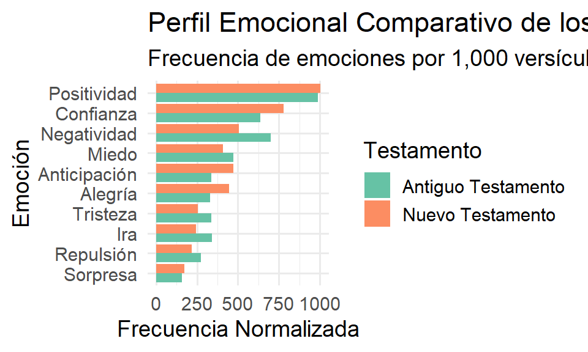
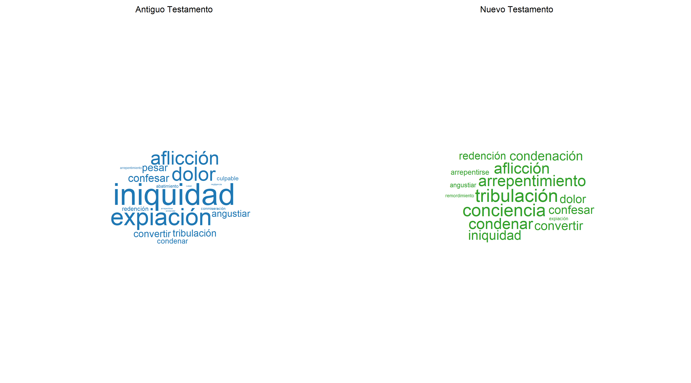
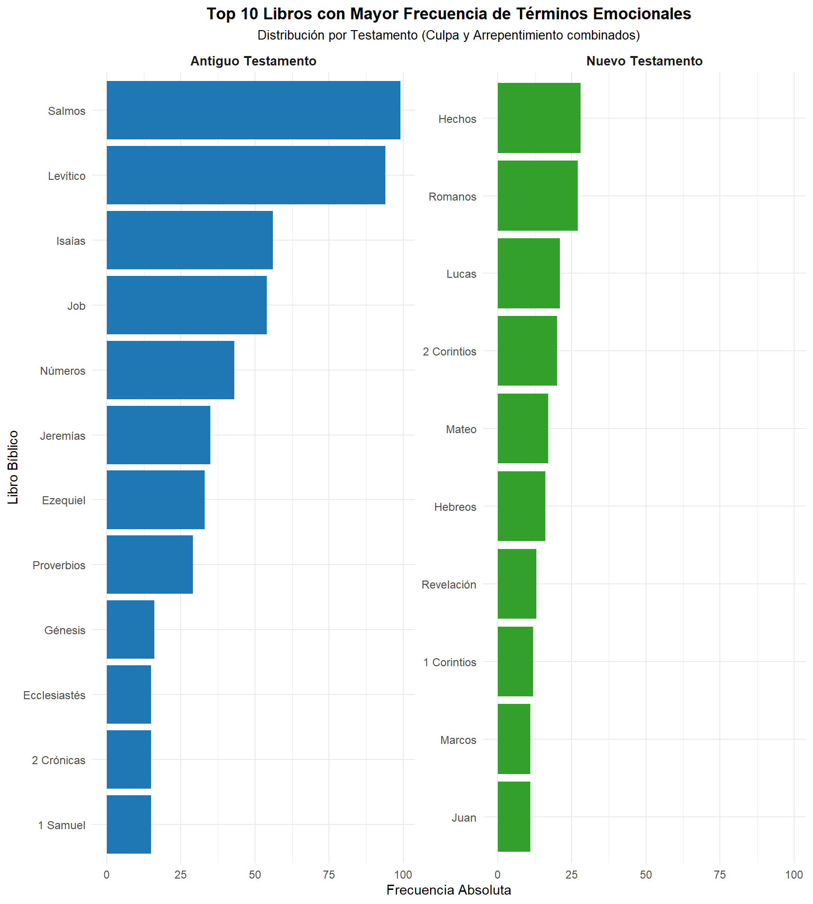
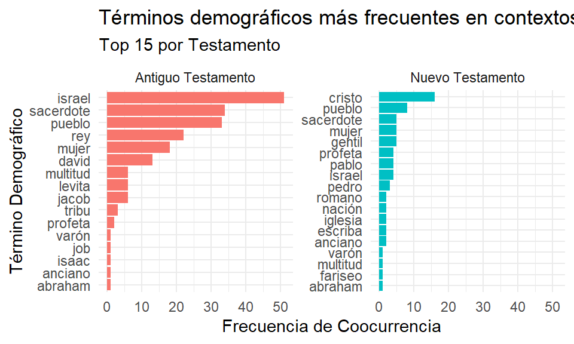
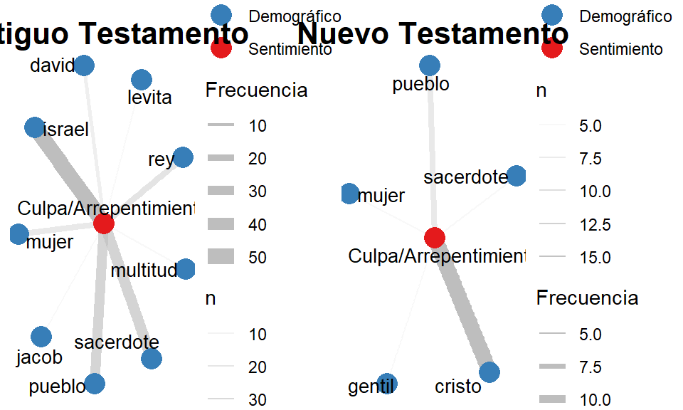

Trabajo Final
Análisis de Sentimientos en Textos Bíblicos: Culpa y Arrepentimiento en la Biblia (Reina-Valera 1909)
Licenciatura en Sociología — UNVM | IAPCS
Universidad de Flores
2025-07-03
1 Presentación y configuración incial
Este trabajo presenta un análisis computacional de sentimientos aplicado a un corpus religioso de alto valor simbólico y cultural: la Biblia, en su versión Reina-Valera, 1909. El objetivo central es explorar dos emociones teológicas fundamentales —la culpa y el arrepentimiento— a partir de su apariciones en el Antiguo y Nuevo Testamento.
1.1 Instalación de paquetes
Para llevar adelante el análisis, se requiere instalar un conjunto de paquetes de R que brindan soporte para lectura de archivos, manipulación de datos, análisis textual, lematización, visualización y paralelización de tareas.
⚠️ Este bloque debe ejecutarse solo una vez en el entorno local.
1.2 Carga de librerías
Una vez instalados los paquetes, se cargan las librerías necesarias para la sesión actual. Estas permiten realizar tareas clave como tokenización, limpieza, detección de sentimientos, construcción de redes semánticas y generación de gráficos interactivos y estáticos. Se destacan:
tidytextyudpipepara análisis léxico y lingüístico.ggplot2,ggraphyggwordcloudpara visualización.widyreigraphpara coocurrencias y redes.futureyfuture.applypara paralelizar procesos como la lematización.
library(tidyverse)
library(tidytext)
library(treemapify)
library(udpipe)
library(ggwordcloud)
library(igraph)
library(ggraph)
library(textdata)
library(stopwords)
library(widyr)
library(future)
library(future.apply)
library(tm)
library(spacyr)
library(igraph)
library(ggraph)
library(syuzhet)
library(here)
library(patchwork)
message("Librerías cargadas.")2 Carga y Estructuración del Corpus
El corpus textual, la Biblia Reina-Valera 1909, se carga en memoria desde un documento .txt y se estructura en un formato tabular para facilitar su procesamiento.
2.1 Lectura y limpieza inicial
Se lee el archivo .txt y se eliminan las líneas de metadatos iniciales.
# Definir la ruta al archivo del corpus
ruta_biblia <- here::here("data", "raw", "rv_1909.txt")
# Leer el archivo línea por línea, omitiendo líneas vacías
if (!file.exists(ruta_biblia)) {
stop(paste("No se encontró el archivo en la ruta especificada:", ruta_biblia))
}
lineas_biblia_raw <- readr::read_lines(ruta_biblia, skip_empty_rows = TRUE)
# El archivo rv_1909.txt tiene 2 líneas de metadatos al inicio que deben ser omitidas
lineas_biblia <- lineas_biblia_raw[-(1:2)]
message("Limpieza terminada.")2.2 Parseo de Versículos
Se utiliza una expresión regular para identificar y extraer las partes de cada versículo: Libro, Capítulo, Versículo y Texto. Para estructurar adecuadamente el corpus bíblico, se aplica una expresión regular (regex) diseñada específicamente para identificar y separar los elementos clave de cada línea del texto: el nombre del libro, el número de capítulo, el número de versículo y el contenido textual del versículo.
Detecta nombres de
libros, incluso si comienzan con números (1 Samuel,2 Corintios).Extrae el número de
capítuloyversículo(formatoCapítulo:Versículo).Aísla el contenido del
versículocomo texto.
# Expresión regular para parsear Libro, Capítulo, Versículo y Texto
regex_biblia <- "^([1-3]?\\s*[A-Za-záéíóúñÑ]+(?:\\s[A-Za-záéíóúñÑ]+)*)\\s+(\\d+):(\\d+)\\s+(.*)$"
# Filtrar solo las líneas que coinciden con el formato de un versículo
lineas_validas_indices <- str_which(lineas_biblia, regex_biblia)
lineas_validas <- lineas_biblia[lineas_validas_indices]
# Extraer las partes de cada línea usando la regex
partes_biblia <- str_match(lineas_validas, regex_biblia)
# Convertir la matriz de resultados en un tibble (DF mejorado)
biblia_df_temp <- tibble(
Libro_Parsed = str_trim(partes_biblia[,2]),
Capitulo_Parsed = as.integer(partes_biblia[,3]),
Versiculo_Parsed = as.integer(partes_biblia[,4]),
Texto_Parsed = partes_biblia[,5]
)
message("Parseo de la Biblia creado.")2.3 Creación del Data Frame
Luego de extraer, limpiar y estructurar la información del corpus bíblico, se procede a clasificar cada uno de los versículos según su procedencia en el Antiguo Testamento o el Nuevo Testamento, en función del libro al que pertenecen.
# Definir listas de libros para el Antiguo y Nuevo Testamento
AT_libros <- c("Génesis", "Éxodo", "Levítico", "Números", "Deuteronomio", "Josué", "Jueces", "Rut", "1 Samuel", "2 Samuel", "1 Reyes", "2 Reyes", "1 Crónicas", "2 Crónicas", "Esdras", "Nehemías", "Tobías", "Judit", "Esther", "1 Macabeos", "2 Macabeos", "Job", "Salmos", "Proverbios", "Canción de canciones", "Sabiduría", "Ecclesiastés", "Isaías", "Jeremías", "Lamentaciones", "Baruc", "Ezequiel", "Daniel", "Oseas", "Joel", "Amós", "Abdías", "Jonás", "Miqueas", "Nahum", "Habacuc", "Sofonías", "Haggeo", "Zacarías", "Malaquías")
NT_libros <- c("Mateo", "Marcos", "Lucas", "Juan", "Hechos", "Romanos", "1 Corintios", "2 Corintios", "Gálatas", "Efesios","Filipenses", "Colosenses", "1 Tesalonicenses", "2 Tesalonicenses", "1 Timoteo", "2 Timoteo", "Tito", "Filemón", "Hebreos", "Santiago", "1 Pedro", "2 Pedro", "1 Juan", "2 Juan", "3 Juan", "Judas", "Apocalipsis", "Revelación")
# Crear el DF final con la estructura deseada
biblia_df <- biblia_df_temp %>%
mutate(
Testamento = case_when(
Libro_Parsed %in% AT_libros ~ "Antiguo Testamento",
Libro_Parsed %in% NT_libros ~ "Nuevo Testamento"
),
Libro = Libro_Parsed,
Capitulo = Capitulo_Parsed,
Versiculo = Versiculo_Parsed,
Texto = Texto_Parsed,
ID_Versiculo = paste(Libro_Parsed, Capitulo_Parsed, Versiculo_Parsed, sep = "_")
) %>%
select(ID_Versiculo, Testamento, Libro, Capitulo, Versiculo, Texto) %>%
filter(!is.na(Testamento))
message("DF de la Biblia creado y filtrado.")2.4 Visualización final
A continuación se presentan las primeras filas del data frame consolidado, que contienen los textos bíblicos ya clasificados y listos para el análisis posterior.
| ID_Versiculo | Testamento | Libro | Capitulo | Versiculo | Texto |
|---|---|---|---|---|---|
| Génesis_1_1 | Antiguo Testamento | Génesis | 1 | 1 | En el principio creó Dios los cielos y la tierra. |
| Génesis_1_2 | Antiguo Testamento | Génesis | 1 | 2 | Y la tierra estaba desordenada y vacía, y las tinieblas estaban sobre la haz del abismo, y el Espíritu de Dios se movía sobre la haz de las aguas. |
| Génesis_1_3 | Antiguo Testamento | Génesis | 1 | 3 | Y dijo Dios: Sea la luz: y fué la luz. |
| Génesis_1_4 | Antiguo Testamento | Génesis | 1 | 4 | Y vió Dios que la luz era buena: y apartó Dios la luz de las tinieblas. |
| Génesis_1_5 | Antiguo Testamento | Génesis | 1 | 5 | Y llamó Dios á la luz Día, y á las tinieblas llamó Noche: y fué la tarde y la mañana un día. |
| Génesis_1_6 | Antiguo Testamento | Génesis | 1 | 6 | Y dijo Dios: Haya expansión en medio de las aguas, y separe las aguas de las aguas. |
| Génesis_1_7 | Antiguo Testamento | Génesis | 1 | 7 | E hizo Dios la expansión, y apartó las aguas que estaban debajo de la expansión, de las aguas que estaban sobre la expansión: y fué así. |
| Génesis_1_8 | Antiguo Testamento | Génesis | 1 | 8 | Y llamó Dios á la expansión Cielos: y fué la tarde y la mañana el día segundo. |
| Génesis_1_9 | Antiguo Testamento | Génesis | 1 | 9 | Y dijo Dios: Júntense las aguas que están debajo de los cielos en un lugar, y descúbrase la seca: y fué así. |
| Génesis_1_10 | Antiguo Testamento | Génesis | 1 | 10 | Y llamó Dios á la seca Tierra, y á la reunión de las aguas llamó Mares: y vió Dios que era bueno. |
- Data Frame de procesamiento
3 Preprocesamiento Avanzado del Texto
Para garantizar un análisis de texto riguroso y fiable, se implementan técnicas estándar de procesamiento de lenguaje natural (PLN) con el fin de limpiar, estructurar y normalizar el corpus textual. Estas transformaciones permiten reducir el ruido lingüístico y obtener una representación más significativa de los datos textuales.
3.1 Limpieza de texto
Este paso inicial tiene como objetivo homogeneizar el contenido textual, eliminando componentes irrelevantes para el análisis semántico posterior. Las transformaciones aplicadas son:
✅ Conversión a minúsculas tolower: evita que palabras idénticas con distinta capitalización se contabilicen como diferentes (por ejemplo, “Dios” vs. “dios”).
✅ Eliminación de signos de puntuación str_remove_all("[[:punct:]]"): quita comas, puntos, signos de interrogación, etc., que no aportan valor semántico al nivel de palabra.
✅ Eliminación de números str_remove_all("\d+"): se suprimen dígitos que en este corpus no representan conceptos teológicos relevantes.
✅ Espacios redundantes str_squish(): elimina espacios múltiples o innecesarios entre palabras.
✅ Tildes "Latin-ASCII": elimina las tildes en todas las palabras.
biblia_df_procesado <- biblia_df %>%
mutate(
Texto_Procesado = tolower(Texto),
Texto_Procesado = stringi::stri_trans_general(Texto_Procesado, "Latin-ASCII"),
Texto_Procesado = str_remove_all(Texto_Procesado, "[[:punct:]]"),
Texto_Procesado = str_remove_all(Texto_Procesado, "\\d+"),
Texto_Procesado = str_squish(Texto_Procesado)
)
message("Corpus preprocesado y listo.")3.2 Tokenización y Stop Words
En esta etapa, el texto es descompuesto en unidades mínimas de análisis: las palabras individuales o tokens.
✂️ Tokenización: el procedimiento convierte cada versículo en una lista de palabras individuales, lo que permite analizar su frecuencia, contexto, y coocurrencia. Se conserva información contextual como libro, capítulo y testamento, facilitando análisis comparativos.
🚫 Stop Words: las stop words son palabras extremadamente frecuentes (como “el”, “y”, “a”) que no aportan valor semántico en la mayoría de los análisis. Estas se eliminan utilizando una lista predefinida en español (fuente: snowball), con el fin de focalizar el análisis en términos significativos.
# Tokenización
biblia_tokens <- biblia_df_procesado %>%
select(ID_Versiculo, Testamento, Libro, Capitulo, Versiculo, Texto_Procesado) %>%
unnest_tokens(output = "Palabra", input = "Texto_Procesado")
# Eliminación de Stop Words
lista_stopwords_es <- stopwords::stopwords("es", source = "snowball")
stopwords_df <- tibble(Palabra = lista_stopwords_es)
biblia_tokens_sin_stopwords <- biblia_tokens %>%
anti_join(stopwords_df, by = "Palabra")
message("Corpus preprocesado y listo.")3.3 Visualización de Tokens sin Stop Words
A continuación, se muestra una vista preliminar de las primeras 10 filas del data frame resultante. Cada fila representa una palabra significativa, lista para ser utilizada en análisis posteriores.
knitr::kable(
head(biblia_tokens_sin_stopwords, 10),
caption = "Data Frame de Tokens sin Stop Words (primeras 10 filas)"
)| ID_Versiculo | Testamento | Libro | Capitulo | Versiculo | Palabra |
|---|---|---|---|---|---|
| Génesis_1_1 | Antiguo Testamento | Génesis | 1 | 1 | principio |
| Génesis_1_1 | Antiguo Testamento | Génesis | 1 | 1 | creo |
| Génesis_1_1 | Antiguo Testamento | Génesis | 1 | 1 | dios |
| Génesis_1_1 | Antiguo Testamento | Génesis | 1 | 1 | cielos |
| Génesis_1_1 | Antiguo Testamento | Génesis | 1 | 1 | tierra |
| Génesis_1_2 | Antiguo Testamento | Génesis | 1 | 2 | tierra |
| Génesis_1_2 | Antiguo Testamento | Génesis | 1 | 2 | desordenada |
| Génesis_1_2 | Antiguo Testamento | Génesis | 1 | 2 | vacia |
| Génesis_1_2 | Antiguo Testamento | Génesis | 1 | 2 | tinieblas |
| Génesis_1_2 | Antiguo Testamento | Génesis | 1 | 2 | haz |
4 Análisis de sentimientos con léxico NRC
Este bloque implementa un análisis de sentimientos utilizando el léxico NRC en su versión en español, aplicado sobre el corpus bíblico previamente normalizado. El objetivo es cuantificar y comparar la distribución de emociones (como ira, miedo, confianza, alegría, tristeza, entre otras) con el fin de obtener una primera aproximación a las diferencias afectivas entre el Antiguo y el Nuevo Testamento.
# Obtener puntuaciones de sentimiento usando el léxico NRC en español
# Se aplica sobre la columna con el texto ya limpio y preprocesado
nrc_sentimientos <- get_nrc_sentiment(
biblia_df_procesado$Texto_Procesado,
language = "spanish"
)
# Combinar los resultados con el dataframe procesado
biblia_nrc <- bind_cols(biblia_df_procesado, nrc_sentimientos)
# Resumir los datos por Testamento para análisis comparativo
biblia_nrc_summary <- biblia_nrc %>%
group_by(Testamento) %>%
# Sumar los puntajes de cada emoción para cada Testamento.
summarise(across(anger:positive, sum, .names = "total_{.col}")) %>%
# Reestructurar los datos para facilitar la visualización
pivot_longer(
cols = -Testamento,
names_to = "Emocion",
values_to = "Conteo",
names_prefix = "total_"
) %>%
# Unir con el conteo total de versículos por testamento para normalizar
left_join(
biblia_df %>% count(Testamento, name = "Total_Versiculos"),
by = "Testamento"
) %>%
# Calcular la frecuencia por cada 1,000 versículos para una comparación justa
mutate(
Frecuencia_Normalizada = (Conteo / Total_Versiculos) * 1000,
# Capitalizar la primera letra de cada emoción para el gráfico
Emocion = str_to_title(Emocion)
)
message("Análisis NRC finalizado.")4.1 Visualización de resultados
Este bloque construye una representación gráfica de la distribución emocional del corpus bíblico, utilizando los resultados obtenidos a partir del léxico NRC. Para facilitar la interpretación, se excluyen las categorías de polaridad general (Positive y Negative) y se focaliza en las 8 emociones básicas propuestas por el léxico: ira, anticipación, repulsión, miedo, alegría, tristeza, sorpresa y confianza.
biblia_nrc_summary_es <- biblia_nrc_summary %>%
mutate(
Emocion = recode(Emocion,
"Anger" = "Ira",
"Anticipation" = "Anticipación",
"Disgust" = "Repulsión",
"Fear" = "Miedo",
"Joy" = "Alegría",
"Sadness" = "Tristeza",
"Surprise" = "Sorpresa",
"Trust" = "Confianza",
"Positive" = "Positividad",
"Negative" = "Negatividad"
)
)
# Se excluyen las categorías "Positive" y "Negative" para centrarse en las 8 emociones básicas
top_emociones <- biblia_nrc_summary %>%
group_by(Testamento) %>%
slice_max(Frecuencia_Normalizada, n = 5) %>%
ungroup()
ggplot(
biblia_nrc_summary_es %>% filter(!Emocion %in% c("Positive", "Negative")),
aes(x = reorder(Emocion, Frecuencia_Normalizada), y = Frecuencia_Normalizada, fill = Testamento)
) +
geom_col(position = "dodge") +
coord_flip() +
labs(
title = "Perfil Emocional Comparativo de los Testamentos",
subtitle = "Frecuencia de emociones por 1,000 versículos",
x = "Emoción",
y = "Frecuencia Normalizada",
fill = "Testamento"
) +
theme_minimal(base_size = 14) +
scale_fill_brewer(palette = "Set2")
2. Perfil Emocional Comparativo de los Testamentos
5 Lematización Paralela
La lematización es un proceso fundamental del análisis de texto que permite agrupar distintas formas flexionadas de una palabra bajo una misma raíz o lema (por ejemplo: pecado, pecar, pecando → pecar). Esto contribuye a reducir la dimensionalidad del corpus, mejora la coherencia semántica y optimiza análisis posteriores como clasificación, minería de sentimientos y análisis de frecuencia.
Dado el tamaño del corpus bíblico, la lematización se realiza de manera paralela para aprovechar múltiples núcleos de procesamiento, reduciendo significativamente el tiempo de ejecución.
Ejemplo de lematización:

5.1 Carga del Modelo UDPipe
Para lematizar, se utiliza un modelo entrenado con el estándar Universal Dependencies (UD) a través de la librería UDPipe. En este paso:
Se define un directorio local para almacenar el modelo.
Se descarga el modelo
spanish-ancorasi aún no está disponible localmente.Se carga a memoria para ser utilizado en las tareas de anotación lingüística.
# Crear carpeta si no existe
modelo_dir <- "models"
if (!dir.exists(modelo_dir)) {
dir.create(modelo_dir)
}
# Ruta del modelo
nombre_modelo_udpipe <- file.path(modelo_dir, "spanish-ancora-ud-2.5-191206.udpipe")
# Descargar modelo si no existe
if (!file.exists(nombre_modelo_udpipe)) {
message("Intentando descargar el modelo UDPipe para español...")
tryCatch({
udpipe::udpipe_download_model(language = "spanish-ancora-ud-2.5-191206", model_dir = modelo_dir)
message("Descarga exitosa.")
}, error = function(e) {
stop("Error al descargar el modelo UDPipe. Verificá tu conexión a internet o permisos de escritura.\n", e)
})
}
#Cargar modelo con manejo de errores
modelo_udpipe <- tryCatch({
udpipe::udpipe_load_model(file = nombre_modelo_udpipe)
}, error = function(e) {
stop("Error al cargar el modelo UDPipe. Verificá si el archivo está corrupto o mal ubicado.\n", e)
})
message("Modelo UDPipe cargado correctamente.")5.2 Ejecución de Lematización en Paralelo
Dado que la lematización es costosa computacionalmente, se aplica una estrategia de paralelización en varios pasos:
División del corpus en lotes: el
corpusse fracciona en bloques de 500 versículos para permitir su procesamiento independiente y simultáneo.Configuración de núcleos: se detectan los núcleos de procesamiento disponibles (
availableCores()) y se reserva uno para el sistema operativo.Función de anotación con UDPipe: cada lote es procesado mediante la función udpipe_annotate, que devuelve anotaciones lingüísticas incluyendo el lema, el token original y su categoría gramatical (
POS tag).Consolidación y filtrado: se unifican los resultados y se filtran por categorías gramaticales relevantes:
sustantivos,verbos,adjetivosyadverbios. Además, se eliminan los lemas que coincidan constop words.
# Preparar lotes
tamanio_lote <- 500
biblia_df_lotes <- biblia_df_procesado %>%
mutate(lote_id = ((row_number() - 1) %/% tamanio_lote) + 1) %>%
group_by(lote_id) %>%
nest() %>%
pull(data)
# Configurar paralelización
num_cores <- availableCores() - 1
if (num_cores < 1) num_cores <- 1
plan(multisession, workers = num_cores)
# Función de trabajo
procesar_lote_udpipe <- function(lote_df, ruta_modelo) {
library(udpipe)
library(dplyr)
modelo_local <- udpipe_load_model(file = ruta_modelo)
anotaciones <- udpipe_annotate(
object = modelo_local, x = lote_df$Texto_Procesado,
doc_id = lote_df$ID_Versiculo, parser = "none"
)
as_tibble(anotaciones)
}
# Ejecutar y consolidar
message("Iniciando lematización paralela...")
resultados_paralelos <- future_lapply(
X = biblia_df_lotes, FUN = procesar_lote_udpipe,
ruta_modelo = nombre_modelo_udpipe, future.seed = TRUE
)
plan(sequential)
message("Lematización completada.")
# Consolidar resultados
biblia_lemas_df_raw <- bind_rows(resultados_paralelos)
biblia_lemas_df <- biblia_lemas_df_raw %>%
filter(upos %in% c("NOUN", "VERB", "ADJ")) %>%
select(doc_id, token, lemma, upos) %>%
rename(ID_Versiculo = doc_id, Palabra_Original_Token = token, Lema = lemma, POS_Tag = upos) %>%
mutate(Lema = tolower(Lema)) %>%
anti_join(tibble(Lema = lista_stopwords_es), by = "Lema")
biblia_lemas_final_df <- biblia_lemas_df %>%
left_join(biblia_df %>% select(ID_Versiculo, Testamento, Libro, Capitulo, Versiculo), by = "ID_Versiculo") %>%
select(ID_Versiculo, Testamento, Libro, Capitulo, Versiculo, Palabra_Original_Token, Lema, POS_Tag)
message("Resultados consolidados.")5.3 Visualización de Lematización
A continuación se muestra una vista preliminar del resultado de la lematización, que contiene las formas base (lemas) extraídas del corpus bíblico procesado, junto con su información contextual (ubicación en el texto y clase gramatical):
| ID_Versiculo | Testamento | Libro | Capitulo | Versiculo | Palabra_Original_Token | Lema | POS_Tag |
|---|---|---|---|---|---|---|---|
| Génesis_1_1 | Antiguo Testamento | Génesis | 1 | 1 | principio | principio | NOUN |
| Génesis_1_1 | Antiguo Testamento | Génesis | 1 | 1 | creo | creer | VERB |
| Génesis_1_1 | Antiguo Testamento | Génesis | 1 | 1 | dios | dios | ADJ |
| Génesis_1_1 | Antiguo Testamento | Génesis | 1 | 1 | cielos | cielo | NOUN |
| Génesis_1_1 | Antiguo Testamento | Génesis | 1 | 1 | tierra | tierra | NOUN |
| Génesis_1_2 | Antiguo Testamento | Génesis | 1 | 2 | tierra | tierra | NOUN |
| Génesis_1_2 | Antiguo Testamento | Génesis | 1 | 2 | desordenada | desordenado | ADJ |
| Génesis_1_2 | Antiguo Testamento | Génesis | 1 | 2 | vacia | vacia | NOUN |
| Génesis_1_2 | Antiguo Testamento | Génesis | 1 | 2 | tinieblas | tiniebla | NOUN |
| Génesis_1_2 | Antiguo Testamento | Génesis | 1 | 2 | haz | haz | NOUN |
| Génesis_1_2 | Antiguo Testamento | Génesis | 1 | 2 | abismo | abismo | NOUN |
| Génesis_1_2 | Antiguo Testamento | Génesis | 1 | 2 | espiritu | espiritu | NOUN |
| Génesis_1_2 | Antiguo Testamento | Génesis | 1 | 2 | dios | dios | NOUN |
| Génesis_1_2 | Antiguo Testamento | Génesis | 1 | 2 | movia | movia | VERB |
| Génesis_1_2 | Antiguo Testamento | Génesis | 1 | 2 | haz | haz | NOUN |
| Génesis_1_2 | Antiguo Testamento | Génesis | 1 | 2 | aguas | agua | NOUN |
| Génesis_1_3 | Antiguo Testamento | Génesis | 1 | 3 | dijo | decir | VERB |
| Génesis_1_3 | Antiguo Testamento | Génesis | 1 | 3 | dios | dios | NOUN |
| Génesis_1_3 | Antiguo Testamento | Génesis | 1 | 3 | luz | luz | NOUN |
| Génesis_1_3 | Antiguo Testamento | Génesis | 1 | 3 | luz | luz | NOUN |
Lematización
6 Construcción del Léxico de Sentimientos
Uno de los pasos clave en el análisis de sentimientos consiste en construir un léxico personalizado que contenga términos asociados con las emociones o categorías afectivas que se desean estudiar. En este caso, el foco se sitúa en dos emociones centrales: culpa y arrepentimiento, analizadas en el marco del discurso bíblico.
Según la Real Academia Española (RAE), culpa se define como:
Por su parte, arrepentimiento se describe como:
A partir de estas definiciones, se construye un léxico de manera manual y supervisada, incorporando términos que representan con precisión los núcleos semánticos y morales de ambas categorías afectivas. Luego, este conjunto inicial se lematiza automáticamente para capturar sus distintas variantes lingüísticas (por ejemplo, “pecador”, “pecar”, “pecado”).
El resultado es un conjunto curado de palabras que representan cada una de estas emociones y que permite detectar su presencia en el texto con mayor precisión, facilitando un análisis afectivo situado, coherente y fundamentado tanto en fuentes lingüísticas como teóricas.
lexico_sentimientos_biblia <- c(
# Términos de Culpa
"culpa", "culpabilidad", "culpable", "culposo", "responsabilidad", "iniquidad", "irresponsabilidad", "negligencia", "responsabilizar", "condena", "condenación",
# Términos de Arrepentimiento
"arrepentimiento", "arrepentir", "arrepentirse", "contrición", "contrito", "penitencia", "penitente", "confesar", "confesión", "enmienda", "enmendar", "expiación", "resarcir", "desagravio", "convertir", "convertirse", "redención", "restitución", "conversión",
# Términos de solapamiento
"remordimiento", "pesar", "pesadumbre", "dolor", "aflicción", "compunción", "humillación", "abatimiento", "quebranto", "autorreproche", "angustia", "tribulación", "conciencia", "conmiseración"
)
message("Léxico de sentimientos creado.")6.1 Lematización del léxico
Luego de construir un léxico unificado que reúne términos asociados tanto al sentimiento de culpa como al de arrepentimiento (basado en definiciones lingüísticas y conceptuales), se procede a su lematización. Este paso es fundamental para normalizar las variantes morfológicas de cada palabra y garantizar que todas las formas derivadas sean reconocidas como equivalentes semánticos durante el análisis.
La lematización se realiza utilizando el modelo UDPipe previamente cargado, filtrando únicamente aquellas palabras que corresponden a sustantivos, verbos o adjetivos, ya que son las categorías gramaticales que más contribuyen al significado emocional del texto.
Finalmente, se elimina cualquier coincidencia con stopwords en español, para asegurar que el léxico resultante contenga solo términos relevantes desde el punto de vista semántico. El resultado es un conjunto lematizado, curado y preparado para ser utilizado en la detección de sentimientos dentro del corpus bíblico.
# Función de lematización
lematizar_lista_lexico <- function(terminos_lista, modelo) {
if (length(terminos_lista) == 0) return(character(0))
anotaciones <- udpipe_annotate(modelo, x = terminos_lista, doc_id = seq_along(terminos_lista), parser = "none")
as_tibble(anotaciones) %>%
filter(upos %in% c("NOUN", "VERB", "ADJ")) %>%
pull(lemma) %>%
tolower() %>%
unique()
}
# Lematización
lexico_sentimientos_lemas <- lematizar_lista_lexico(lexico_sentimientos_biblia, modelo_udpipe)
# Eliminar stopwords por si alguna coincide
lexico_sentimientos_lemas <- setdiff(lexico_sentimientos_lemas, lista_stopwords_es)
# Crear el DF final del léxico lematizado
lexico_sentimientos_df <- tibble(
Lema = lexico_sentimientos_lemas,
Sentimiento = "Culpa/Arrepentimiento"
)
message("Léxico de sentimientos lematizado y listo.")6.2 Data Frame de Léxico
El siguiente cuadro muestra el léxico final utilizado en el análisis. Cada fila representa una palabra lematizada que ha sido previamente seleccionada, normalizada y clasificada según uno de los dos sentimientos en estudio: culpa o arrepentimiento. Esta tabla constituye la base para la detección de emociones en los versículos de la Biblia, ya que permite identificar de manera sistemática la presencia de estos términos en el corpus procesado.
| Lema | Sentimiento |
|---|---|
| culpar | Culpa/Arrepentimiento |
| culpabilidad | Culpa/Arrepentimiento |
| culpable | Culpa/Arrepentimiento |
| culposo | Culpa/Arrepentimiento |
| responsabilidad | Culpa/Arrepentimiento |
| iniquidad | Culpa/Arrepentimiento |
| irresponsabilidad | Culpa/Arrepentimiento |
| negligencia | Culpa/Arrepentimiento |
| responsabilizar | Culpa/Arrepentimiento |
| condenar | Culpa/Arrepentimiento |
| condenación | Culpa/Arrepentimiento |
| arrepentimiento | Culpa/Arrepentimiento |
| arrepentirse | Culpa/Arrepentimiento |
| contrición | Culpa/Arrepentimiento |
| contribir | Culpa/Arrepentimiento |
| penitencia | Culpa/Arrepentimiento |
| penitente | Culpa/Arrepentimiento |
| confesar | Culpa/Arrepentimiento |
| confesión | Culpa/Arrepentimiento |
| enmender | Culpa/Arrepentimiento |
| enmendar | Culpa/Arrepentimiento |
| expiación | Culpa/Arrepentimiento |
| resarcir | Culpa/Arrepentimiento |
| desagraver | Culpa/Arrepentimiento |
| convertir | Culpa/Arrepentimiento |
| redención | Culpa/Arrepentimiento |
| restitución | Culpa/Arrepentimiento |
| conversión | Culpa/Arrepentimiento |
| remordimiento | Culpa/Arrepentimiento |
| pesar | Culpa/Arrepentimiento |
| pesadumbre | Culpa/Arrepentimiento |
| dolor | Culpa/Arrepentimiento |
| aflicción | Culpa/Arrepentimiento |
| compunción | Culpa/Arrepentimiento |
| humillación | Culpa/Arrepentimiento |
| abatimiento | Culpa/Arrepentimiento |
| autorreprochar | Culpa/Arrepentimiento |
| angustiar | Culpa/Arrepentimiento |
| tribulación | Culpa/Arrepentimiento |
| conciencia | Culpa/Arrepentimiento |
| conmiseración | Culpa/Arrepentimiento |
Data Frame de Léxico
7 Detección de Sentimientos
Para identificar la presencia de los sentimientos de los sentimientos en el corpus bíblico, se realiza un cruce entre el Data Frame de lemas (biblia_lemas_final_df) y el léxico de sentimientos construido (lexico_sentimientos_df). Este paso permite etiquetar cada lema bíblico con el sentimiento asociado si existe una correspondencia.
7.1 Visualización de sentimientos detectados
A continuación, se muestran las filas del data frame consolidado que contiene cada lema asociado a su categoría emocional.
knitr::kable(
head(biblia_sentimientos_detectados, 10),
caption = "Data Frame de Sentimientos Detectados",
align = "c"
)| ID_Versiculo | Testamento | Libro | Capitulo | Versiculo | Palabra_Original_Token | Lema | POS_Tag | Sentimiento |
|---|---|---|---|---|---|---|---|---|
| Génesis_3_16 | Antiguo Testamento | Génesis | 3 | 16 | dolores | dolor | NOUN | Culpa/Arrepentimiento |
| Génesis_3_17 | Antiguo Testamento | Génesis | 3 | 17 | dolor | dolor | NOUN | Culpa/Arrepentimiento |
| Génesis_4_13 | Antiguo Testamento | Génesis | 4 | 13 | iniquidad | iniquidad | NOUN | Culpa/Arrepentimiento |
| Génesis_16_11 | Antiguo Testamento | Génesis | 16 | 11 | afliccion | aflicción | NOUN | Culpa/Arrepentimiento |
| Génesis_24_22 | Antiguo Testamento | Génesis | 24 | 22 | pesaba | pesar | VERB | Culpa/Arrepentimiento |
| Génesis_29_32 | Antiguo Testamento | Génesis | 29 | 32 | afliccion | aflicción | NOUN | Culpa/Arrepentimiento |
| Génesis_31_42 | Antiguo Testamento | Génesis | 31 | 42 | afliccion | aflicción | NOUN | Culpa/Arrepentimiento |
| Génesis_34_25 | Antiguo Testamento | Génesis | 34 | 25 | dolor | dolor | NOUN | Culpa/Arrepentimiento |
| Génesis_41_52 | Antiguo Testamento | Génesis | 41 | 52 | afliccion | aflicción | NOUN | Culpa/Arrepentimiento |
| Génesis_42_38 | Antiguo Testamento | Génesis | 42 | 38 | dolor | dolor | NOUN | Culpa/Arrepentimiento |
Sentimientos detectados
7.2 Visualización con nube de palabras
Se construyen nubes de palabras para representar visualmente las 60 palabras más frecuentes asociadas a los sentimientos analizados según el testamento. Estas visualizaciones permiten identificar rápidamente los términos más representativos dentro del léxico emocional, destacando aquellos que aparecen con mayor recurrencia en el corpus bíblico.
# Filtrar y contar frecuencia para el Antiguo Testamento
frecuencia_at <- biblia_sentimientos_detectados %>%
filter(Testamento == "Antiguo Testamento") %>%
count(Lema, sort = TRUE) %>%
# MEJORA 1: Usamos slice_max() en lugar de top_n()
slice_max(order_by = n, n = 60)
# Filtrar y contar frecuencia para el Nuevo Testamento
frecuencia_nt <- biblia_sentimientos_detectados %>%
filter(Testamento == "Nuevo Testamento") %>%
count(Lema, sort = TRUE) %>%
slice_max(order_by = n, n = 60)
# Nube Antiguo Testamento
nube_at <- ggplot(frecuencia_at, aes(label = Lema, size = n)) +
# MEJORA 2: Usamos geom_text_wordcloud(), que es más robusto
geom_text_wordcloud(color = "#1f78b4") +
scale_size_area(max_size = 20) +
theme_minimal() +
labs(title = "Antiguo Testamento") +
theme(plot.title = element_text(hjust = 0.5, size = 16))
# Nube Nuevo Testamento
nube_nt <- ggplot(frecuencia_nt, aes(label = Lema, size = n)) +
# MEJORA 2: Usamos geom_text_wordcloud(), que es más robusto
geom_text_wordcloud(color = "#33a02c") +
scale_size_area(max_size = 12) +
theme_minimal() +
labs(title = "Nuevo Testamento") +
theme(plot.title = element_text(hjust = 0.5, size = 16))
# Mostrar con patchwork
nube_at + nube_nt
8 Análisis de Frecuencia y Distribución
Este apartado explora la presencia relativa y absoluta de términos asociados a los sentimientos de culpa y arrepentimiento en el corpus bíblico, comparando su distribución entre el Antiguo y el Nuevo Testamento. A través del análisis léxico y su visualización, se busca comprender en qué medida estas categorías emocionales están presentes y cómo varían según el contexto textual y teológico.
8.1 Frecuencia de sentimientos por Testamento
Se calcula la frecuencia absoluta y normalizada (por cada 10.000 palabras) de los términos emocionales en cada uno de los testamentos. Esta comparación permite identificar si ciertos sentimientos están más presentes en uno u otro corpus, en relación a su extensión total.
biblia_sentimientos_detectados <- biblia_lemas_final_df %>%
inner_join(lexico_sentimientos_df, by = "Lema")
frecuencia_por_testamento <- biblia_sentimientos_detectados %>%
count(Testamento, Sentimiento, name = "Frecuencia_Absoluta")
total_palabras_por_testamento <- biblia_lemas_final_df %>%
count(Testamento, name = "Total_Palabras")
frecuencia_comparativa_testamento <- frecuencia_por_testamento %>%
left_join(total_palabras_por_testamento, by = "Testamento") %>%
mutate(Frecuencia_Normalizada = (Frecuencia_Absoluta / Total_Palabras) * 10000) %>%
select(Testamento, Sentimiento, Frecuencia_Absoluta, Frecuencia_Normalizada)
message("Frecuencia calculada.")
testamento_sentimiento <- bind_rows(
head(frecuencia_comparativa_testamento, 10) %>% mutate(Posicion = "Top 10"),
tail(frecuencia_comparativa_testamento, 10) %>% mutate(Posicion = "Bottom 10")
)
knitr::kable(
testamento_sentimiento,
caption = "Primeras y últimas 10 combinaciones Testamento–Sentimiento por frecuencia"
)| Testamento | Sentimiento | Frecuencia_Absoluta | Frecuencia_Normalizada | Posicion |
|---|---|---|---|---|
| Antiguo Testamento | Culpa/Arrepentimiento | 630 | 29.78892 | Top 10 |
| Nuevo Testamento | Culpa/Arrepentimiento | 230 | 36.06203 | Top 10 |
| Antiguo Testamento | Culpa/Arrepentimiento | 630 | 29.78892 | Bottom 10 |
| Nuevo Testamento | Culpa/Arrepentimiento | 230 | 36.06203 | Bottom 10 |
8.2 Frecuencia de sentimientos por Libro
Aquí se examina la frecuencia con la que aparecen los términos del léxico emocional en cada libro bíblico. El objetivo es detectar cuáles libros concentran mayor cantidad de referencias emocionales vinculadas a culpa o arrepentimiento, permitiendo así una lectura más fina de su distribución interna.
frecuencia_sentimiento_por_libro <- biblia_sentimientos_detectados %>%
group_by(Testamento, Libro, Sentimiento) %>%
summarise(Frecuencia = n(), .groups = 'drop') %>%
arrange(Testamento, desc(Frecuencia))
message("Frecuencia calculada.")
libro_sentimiento <- bind_rows(
head(frecuencia_sentimiento_por_libro, 10) %>% mutate(Posicion = "Top 10"),
tail(frecuencia_sentimiento_por_libro, 10) %>% mutate(Posicion = "Bottom 10")
)
knitr::kable(
libro_sentimiento,
caption = "Primeras y últimas 10 combinaciones Libro–Sentimiento por frecuencia"
)| Testamento | Libro | Sentimiento | Frecuencia | Posicion |
|---|---|---|---|---|
| Antiguo Testamento | Salmos | Culpa/Arrepentimiento | 99 | Top 10 |
| Antiguo Testamento | Levítico | Culpa/Arrepentimiento | 94 | Top 10 |
| Antiguo Testamento | Isaías | Culpa/Arrepentimiento | 56 | Top 10 |
| Antiguo Testamento | Job | Culpa/Arrepentimiento | 54 | Top 10 |
| Antiguo Testamento | Números | Culpa/Arrepentimiento | 43 | Top 10 |
| Antiguo Testamento | Jeremías | Culpa/Arrepentimiento | 35 | Top 10 |
| Antiguo Testamento | Ezequiel | Culpa/Arrepentimiento | 33 | Top 10 |
| Antiguo Testamento | Proverbios | Culpa/Arrepentimiento | 29 | Top 10 |
| Antiguo Testamento | Génesis | Culpa/Arrepentimiento | 16 | Top 10 |
| Antiguo Testamento | 1 Samuel | Culpa/Arrepentimiento | 15 | Top 10 |
| Nuevo Testamento | 1 Timoteo | Culpa/Arrepentimiento | 5 | Bottom 10 |
| Nuevo Testamento | Efesios | Culpa/Arrepentimiento | 5 | Bottom 10 |
| Nuevo Testamento | 2 Timoteo | Culpa/Arrepentimiento | 4 | Bottom 10 |
| Nuevo Testamento | 1 Juan | Culpa/Arrepentimiento | 3 | Bottom 10 |
| Nuevo Testamento | 2 Pedro | Culpa/Arrepentimiento | 3 | Bottom 10 |
| Nuevo Testamento | Filipenses | Culpa/Arrepentimiento | 3 | Bottom 10 |
| Nuevo Testamento | Tito | Culpa/Arrepentimiento | 3 | Bottom 10 |
| Nuevo Testamento | Colosenses | Culpa/Arrepentimiento | 2 | Bottom 10 |
| Nuevo Testamento | Judas | Culpa/Arrepentimiento | 2 | Bottom 10 |
| Nuevo Testamento | Gálatas | Culpa/Arrepentimiento | 1 | Bottom 10 |
8.3 Visualización de la Distribución
Se grafican los 10 libros más cargados emocionalmente de cada testamento, en función del total de términos detectados del léxico unificado. Este enfoque visual facilita la identificación de núcleos temáticos con mayor densidad emocional, aportando una primera hipótesis sobre su posible función retórica o doctrinal dentro de la narrativa sagrada.
frecuencia_sentimientos_por_libro <- biblia_sentimientos_detectados %>%
group_by(Testamento, Libro) %>%
summarise(Frecuencia = n(), .groups = "drop")
# Obtener top 10 libros por testamento
top_libros_testamento <- frecuencia_sentimientos_por_libro %>%
group_by(Testamento) %>%
slice_max(order_by = Frecuencia, n = 10) %>%
ungroup() %>%
mutate(Libro = reorder_within(Libro, Frecuencia, Testamento))
# Graficar
grafico_top_libros <- ggplot(top_libros_testamento, aes(x = Libro, y = Frecuencia, fill = Testamento)) +
geom_col(show.legend = FALSE) +
coord_flip() +
facet_wrap(~ Testamento, scales = "free_y") +
scale_x_reordered() +
labs(
title = "Top 10 Libros con Mayor Frecuencia de Términos Emocionales",
subtitle = "Distribución por Testamento (Culpa y Arrepentimiento combinados)",
x = "Libro Bíblico", y = "Frecuencia Absoluta"
) +
theme_minimal(base_size = 11) +
theme(
plot.title = element_text(hjust = 0.5, face = "bold", size = 13),
plot.subtitle = element_text(hjust = 0.5, size = 10),
strip.text = element_text(face = "bold", size = 10),
axis.text.y = element_text(size = 9)
) +
scale_fill_manual(values = c("Antiguo Testamento" = "#1f78b4", "Nuevo Testamento" = "#33a02c"))
# Mostrar gráfico
grafico_top_libros
4. Top 10 libros con mayor frecuencia de términos de Culpa y Arrepentimiento
9 Análisis de Contexto (KWIC)
Con el fin de comprender el uso contextual de los términos emocionales seleccionados, se realiza un análisis de concordancia tipo KWIC (Key Word in Context), que permite observar cómo aparecen estos términos en su entorno textual inmediato. Este procedimiento facilita la identificación de matices semánticos, asociaciones frecuentes y patrones discursivos en torno a los sentimientos de culpa y arrepentimiento, distinguiendo además su uso en el Antiguo y el Nuevo Testamento.
Se presentan versículos seleccionados como ejemplos representativos de cada testamento, a fin de ilustrar cómo se inscriben estos sentimientos en la trama narrativa y doctrinal del corpus bíblico.
obtener_contextos <- function(sentimiento_buscado, testamento_buscado, n_ejemplos = 5) {
ids_versiculos <- biblia_sentimientos_detectados %>%
filter(Sentimiento == sentimiento_buscado, Testamento == testamento_buscado) %>%
pull(ID_Versiculo) %>% unique()
biblia_df %>%
filter(ID_Versiculo %in% ids_versiculos) %>%
sample_n(min(n_ejemplos, length(ids_versiculos))) %>%
select(Libro, Capitulo, Versiculo, Texto)
}
message("Análisis KWIC finalizado.")9.1 Contextos de Culpa y Arrepentimiento
Se presentan ejemplos de versículos extraídos del corpus bíblico en los que aparecen términos pertenecientes al léxico de culpa y arrepentimiento. Este análisis de contexto (KWIC) permite observar cómo estos sentimientos se manifiestan discursivamente en los relatos del Antiguo y del Nuevo Testamento.
La visualización de estos fragmentos facilita una lectura más cualitativa y situada del uso de las palabras clave, destacando las formas en que se articulan con otros elementos narrativos, teológicos o normativos del texto.
knitr::kable(
obtener_contextos("Culpa/Arrepentimiento", "Antiguo Testamento"),
caption = "Contextos de Términos de Sentimiento (Antiguo Testamento)"
)| Libro | Capitulo | Versiculo | Texto |
|---|---|---|---|
| Job | 21 | 4 | ¿Hablo yo á algún hombre? Y ¿por qué no se ha de angustiar mi espíritu? |
| Job | 36 | 10 | Despierta además el oído de ellos para la corrección, Y díce les que se conviertan de la iniquidad. |
| Ecclesiastés | 5 | 17 | Demás de esto, todos los días de su vida comerá en tinieblas, con mucho enojo y dolor y miseria. |
| Salmos | 119 | 3 | Pues no hacen iniquidad Los que andan en sus caminos. |
| Salmos | 38 | 17 | Empero yo estoy á pique de claudicar, Y mi dolor está delante de mí continuamente. |
- DF para contextos KWIC
knitr::kable(
obtener_contextos("Culpa/Arrepentimiento", "Nuevo Testamento"),
caption = "Contextos de Términos de Sentimiento (Nuevo Testamento)"
)| Libro | Capitulo | Versiculo | Texto |
|---|---|---|---|
| Romanos | 9 | 1 | VERDAD digo en Cristo, no miento, dándome testimonio mi conciencia en el Espíritu Santo, |
| Hebreos | 10 | 32 | Empero traed á la memoria los días pasados, en los cuales, después de haber sido iluminados, sufristeis gran combate de aflicciones: |
| Marcos | 10 | 33 | He aquí subimos á Jerusalem, y el Hijo del hombre será entregado á los principes de los sacerdotes, y á los escribas, y le condenarán á muerte, y le entregarán á los Gentiles: |
| Filipenses | 2 | 26 | Porque tenía gran deseo de ver á todos vosotros, y gravemente se angustió porque habíais oído que había enfermado. |
| Romanos | 3 | 24 | Siendo justificados gratuitamente por su gracia por la redención que es en Cristo Jesús; |
- DF para contextos KWIC
10 Asociaciones Demográficas
Este apartado busca explorar la presencia y distribución de términos demográficos (figuras individuales, colectivos sociales o grupos religiosos) dentro del corpus bíblico, poniendo el foco en su posible asociación con los sentimientos de culpa y arrepentimiento. Se parte de un léxico construido manualmente a partir de nombres propios, categorías sociales, roles religiosos y colectivos relevantes.
El objetivo es identificar los actores más frecuentemente mencionados en contextos emocionales y, eventualmente, analizar su papel simbólico dentro de las narrativas de transgresión y redención.
La lista incluye personajes como Adán, Moisés, Jesús y Pedro, además de grupos como judíos, fariseos, y términos abstractos como multitud, iglesia o nación. Luego de la curaduría inicial, se lematizan los términos y se eliminan posibles coincidencias con stopwords para garantizar la pertinencia del análisis.
terminos_demograficos <- c(
"adán", "eva", "caín", "abraham", "isaac", "jacob", "moisés", "aaron",
"david", "salomón", "job", "isaías", "jeremías", "daniel", "josué", "elías", "eliseo",
"jesús", "cristo", "maría", "jose", "juan", "pedro", "pablo", "judas", "tomás", "discípulo", "apóstol", "israel", "israelita", "judío", "samaritano", "gentil", "cananeo", "egipcio", "romano", "fariseo", "saduceo", "sacerdote", "levita", "profeta", "rey", "sacerdote", "escriba", "doctor", "tribu", "pueblo", "nación", "iglesia", "multitud", "mujer", "varón", "niño", "niña", "jóven", "anciano"
)
# Separar términos simples y compuestos
terminos_compuestos <- terminos_demograficos[stringr::str_detect(terminos_demograficos, "\\s")]
terminos_simples <- terminos_demograficos[!stringr::str_detect(terminos_demograficos, "\\s")]
# Lematizar los términos simples
lemas_simples_raw <- lematizar_lista_lexico(terminos_simples, modelo_udpipe)
# Diccionario de correcciones para los errores del lematizador
correcciones_lemas <- c(
"ad" = "adán", "evar" = "eva", "caír" = "caín", "davir" = "david",
"isaía" = "isaías", "jeremía" = "jeremías", "josar" = "josué",
"elía" = "elías", "elisear" = "eliseo", "jesú" = "jesús",
"crer" = "cristo", "marir" = "maría", "juar" = "juan", "juda" = "judas",
"discípular" = "discípulo", "israelitar" = "israelita", "judiar" = "judío",
"romanar" = "romano", "saducear" = "saduceo", "sacerdotar" = "sacerdote",
"levitar" = "levita", "profetar" = "profeta", "escribir" = "escriba",
"iglesiar" = "iglesia", "jóvar" = "jóven", "aar" = "aaron"
)
# Aplicar las correcciones a los lemas simples
lemas_simples_corregidos <- ifelse(
lemas_simples_raw %in% names(correcciones_lemas),
correcciones_lemas[lemas_simples_raw],
lemas_simples_raw
)
# Unir los lemas corregidos con los términos compuestos originales
lexico_demografico_lemas <- c(lemas_simples_corregidos, terminos_compuestos)
# Filtrado final por relevancia semántica
lexico_demografico_lemas <- unique(setdiff(lexico_demografico_lemas, lista_stopwords_es))
# Crear el DataFrame final
lexico_demografico_df <- tibble(Lema = lexico_demografico_lemas, Tipo = "Demográfico")
message("Léxico creado con éxito.")
knitr::kable(
lexico_demografico_df
)| Lema | Tipo |
|---|---|
| adán | Demográfico |
| eva | Demográfico |
| caín | Demográfico |
| abraham | Demográfico |
| isaac | Demográfico |
| jacob | Demográfico |
| moisés | Demográfico |
| aaron | Demográfico |
| david | Demográfico |
| salomón | Demográfico |
| job | Demográfico |
| isaías | Demográfico |
| jeremías | Demográfico |
| daniel | Demográfico |
| josué | Demográfico |
| elías | Demográfico |
| eliseo | Demográfico |
| jesús | Demográfico |
| cristo | Demográfico |
| maría | Demográfico |
| juan | Demográfico |
| pedro | Demográfico |
| pablo | Demográfico |
| judas | Demográfico |
| discípulo | Demográfico |
| apóstol | Demográfico |
| israel | Demográfico |
| israelita | Demográfico |
| judío | Demográfico |
| samaritano | Demográfico |
| gentil | Demográfico |
| cananeo | Demográfico |
| egipcio | Demográfico |
| romano | Demográfico |
| fariseo | Demográfico |
| saduceo | Demográfico |
| sacerdote | Demográfico |
| levita | Demográfico |
| profeta | Demográfico |
| rey | Demográfico |
| escriba | Demográfico |
| doctor | Demográfico |
| tribu | Demográfico |
| pueblo | Demográfico |
| nación | Demográfico |
| iglesia | Demográfico |
| multitud | Demográfico |
| mujer | Demográfico |
| varón | Demográfico |
| niño | Demográfico |
| niña | Demográfico |
| jóven | Demográfico |
| anciano | Demográfico |
10.1 Coocurrencia entre Sentimientos y Términos Demográficos
Este análisis busca identificar los términos demográficos más asociados a contextos emocionales —particularmente, aquellos que co-ocurren con expresiones de culpa o arrepentimiento dentro del mismo versículo.
A partir del cruce entre los lemas del corpus y el léxico demográfico, se construye una tabla que muestra los 10 actores o colectivos más implicados en cada testamento, en función de su frecuencia compartida con términos del léxico emocional. Esta lectura permite rastrear no solo la presencia de los sujetos, sino también su inscripción en tramas de sentido asociadas al castigo, la conversión, el perdón o la transgresión.
# Obtener ID de versículos que contienen al menos un lema demográfico
versiculos_con_demograficos <- biblia_lemas_final_df %>%
semi_join(lexico_demografico_df, by = "Lema") %>%
distinct(ID_Versiculo)
# Obtener ID de versículos que contienen al menos un lema emocional
versiculos_con_sentimientos <- biblia_sentimientos_detectados %>%
distinct(ID_Versiculo)
# Intersección de ambos
versiculos_comunes <- intersect(
versiculos_con_demograficos$ID_Versiculo,
versiculos_con_sentimientos$ID_Versiculo
)
# Construir tabla de coocurrencias, evitando duplicaciones innecesarias
asociaciones_demograficas <- biblia_lemas_final_df %>%
filter(ID_Versiculo %in% versiculos_comunes) %>%
inner_join(lexico_demografico_df, by = "Lema") %>%
rename(Lema_Demografico = Lema) %>%
inner_join(
biblia_sentimientos_detectados %>%
select(ID_Versiculo, Sentimiento, Lema_Sentimiento = Lema),
by = "ID_Versiculo"
) %>%
distinct(Testamento, ID_Versiculo, Lema_Demografico, Sentimiento)10.2 Visualización con gráfico de barras
El siguiente gráfico muestra los 10 términos demográficos más frecuentes en cada testamento. Esta visualización permite identificar diferencias narrativas entre el Antiguo y el Nuevo Testamento en cuanto a los sujetos o colectivos más invocados.
# Detectar menciones en la Biblia
biblia_demografia_detectada <- biblia_lemas_final_df %>%
inner_join(lexico_demografico_df, by = "Lema") %>%
count(Testamento, Lema, sort = TRUE)
datos_grafico <- asociaciones_demograficas %>%
count(Testamento, Lema_Demografico, sort = TRUE) %>%
group_by(Testamento) %>%
slice_max(n, n = 15) %>%
ungroup()
datos_grafico %>%
mutate(Lema_Demografico = reorder_within(Lema_Demografico, n, Testamento)) %>%
ggplot(aes(x = Lema_Demografico, y = n, fill = Testamento)) +
geom_col(show.legend = FALSE) +
# Esta escala especial limpia las etiquetas para el facetado
scale_x_reordered() +
coord_flip() +
facet_wrap(~Testamento, scales = "free_y") +
labs(
title = "Términos demográficos más frecuentes en contextos emocionales",
subtitle = "Top 15 por Testamento",
x = "Término Demográfico",
y = "Frecuencia de Coocurrencia"
) +
theme_minimal()
6. Gráfico de barras para análisis demográfico
10.3 Coocurrencia entre Sentimientos y Términos Demográficos
Este análisis busca identificar los términos demográficos más asociados a contextos emocionales —particularmente, aquellos que co-ocurren con expresiones de culpa o arrepentimiento dentro del mismo versículo.
A partir del cruce entre los lemas del corpus y el léxico demográfico, se construye una tabla que muestra los 10 actores o colectivos más implicados en cada testamento, en función de su frecuencia compartida con términos del léxico emocional. Esta lectura permite rastrear no solo la presencia de los sujetos, sino también su inscripción en tramas de sentido asociadas al castigo, la conversión, el perdón o la transgresión.
# Obtener ID de versículos que contienen al menos un lema demográfico
versiculos_con_demograficos <- biblia_lemas_final_df %>%
semi_join(lexico_demografico_df, by = "Lema") %>%
distinct(ID_Versiculo)
# Obtener ID de versículos que contienen al menos un lema emocional
versiculos_con_sentimientos <- biblia_sentimientos_detectados %>%
distinct(ID_Versiculo)
# Intersección de ambos
versiculos_comunes <- intersect(
versiculos_con_demograficos$ID_Versiculo,
versiculos_con_sentimientos$ID_Versiculo
)
# Construir tabla de coocurrencias, evitando duplicaciones innecesarias
asociaciones_demograficas <- biblia_lemas_final_df %>%
filter(ID_Versiculo %in% versiculos_comunes) %>%
inner_join(lexico_demografico_df, by = "Lema") %>%
rename(Lema_Demografico = Lema) %>%
inner_join(
biblia_sentimientos_detectados %>%
select(ID_Versiculo, Sentimiento, Lema_Sentimiento = Lema),
by = "ID_Versiculo"
) %>%
distinct(Testamento, ID_Versiculo, Lema_Demografico, Sentimiento)10.4 Coocurrencia con grafos
Este apartado representa gráficamente las relaciones entre emociones (culpa y arrepentimiento) y términos demográficos dentro del texto bíblico, diferenciando los resultados por testamento. Se construyen grafos no dirigidos, donde los nodos representan palabras y las aristas indican coocurrencia (presencia conjunta en el mismo versículo).
# Crear data frames de coocurrencia por Testamento
red_at_df <- asociaciones_demograficas %>%
filter(Testamento == "Antiguo Testamento") %>%
count(Sentimiento, Lema_Demografico, sort = TRUE) %>%
filter(n >= 5) # Mantenemos un umbral para claridad
red_nt_df <- asociaciones_demograficas %>%
filter(Testamento == "Nuevo Testamento") %>%
count(Sentimiento, Lema_Demografico, sort = TRUE) %>%
filter(n >= 5)
# Función para crear y visualizar los grafos (para no repetir código)
visualizar_red <- function(df, titulo) {
grafo <- graph_from_data_frame(df, directed = FALSE)
V(grafo)$tipo <- ifelse(V(grafo)$name %in% unique(df$Sentimiento), "Sentimiento", "Demográfico")
# Visualizar el grafo
ggraph(grafo, layout = "fr") +
geom_edge_link(aes(width = n, alpha = n), color = "gray") +
scale_edge_width(range = c(0.5, 4)) +
# Diferenciar por color el tipo de nodo
geom_node_point(aes(color = tipo), size = 5) +
scale_color_manual(values = c("Sentimiento" = "#e41a1c", "Demográfico" = "#377eb8")) +
geom_node_text(aes(label = name), repel = TRUE, size = 3.5) +
theme_void() +
labs(
title = titulo,
edge_width = "Frecuencia",
color = "Tipo de Nodo"
) +
theme(
plot.title = element_text(hjust = 0.5, face = "bold", size = 16),
)
}
# Crear cada gráfico
plot_at <- visualizar_red(red_at_df, "Antiguo Testamento")
plot_nt <- visualizar_red(red_nt_df, "Nuevo Testamento")
# Unir ambos gráficos con patchwork
redes_plot <- plot_at | plot_nt
print(redes_plot)
7. Grafico de grafos